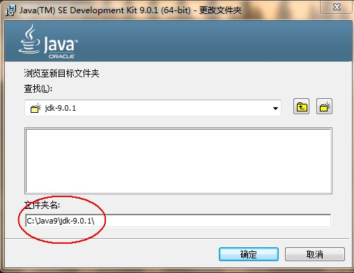

原文出处:本文由博客园博主老鲜肉提供。
原文连接:https://www.cnblogs.com/hoganhome/p/11476920.html
原文连接:https://www.cnblogs.com/hoganhome/p/11476920.html
java 下载：https://www.java.com/zh_CN/
1.Java安装：jdk9

2. JAVA_HOME 环境变量的配置

在DOS命令行下使用这些工具，就要先进入到JDK的bin目录下，这个过程就会非常的麻烦。
不进入JDK的 bin 目录，这些工具就不能使用，会报错。
为了开发方便，我们想在任意的目录下都可以使用JDK的开发工具，则必须要配置环境变量，配置环境变量的意义
在于告诉操作系统，我们使用的JDK开发工具在哪个目录下。
2. 配置环境变量
1. 文件资源管理器 --> 此电脑鼠标右键 --> 选择 属性
2. 选择 高级系统设置 --> 选择 环境变量
3. 点击下方系统变量的 新建 ，创建新的环境变量，变量名输入 JAVA_HOME ，变量值输入JDK9的安装目录D:\02_DevelopTools\Java\jdk -9.0
4. 选中 Path 环境变量， 双击 或者 点击编辑
5. 点击 新建 ，键入 %JAVA_HOME%\bin ，必须是英文格式。选中该行，上移到最上方，点击确定。
6. 环境变量配置完成，重新开启DOS命令行，在任意目录下输入 javac 命令。